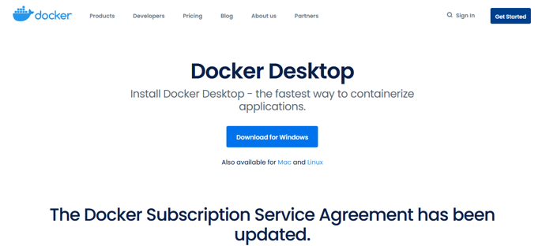
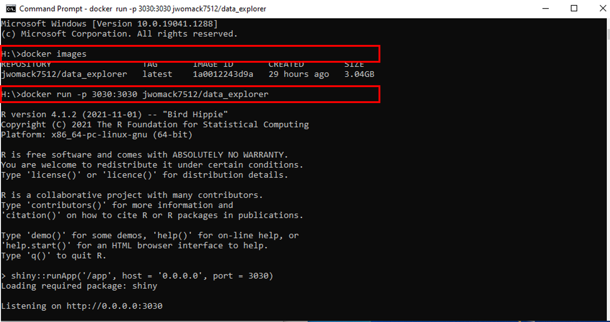
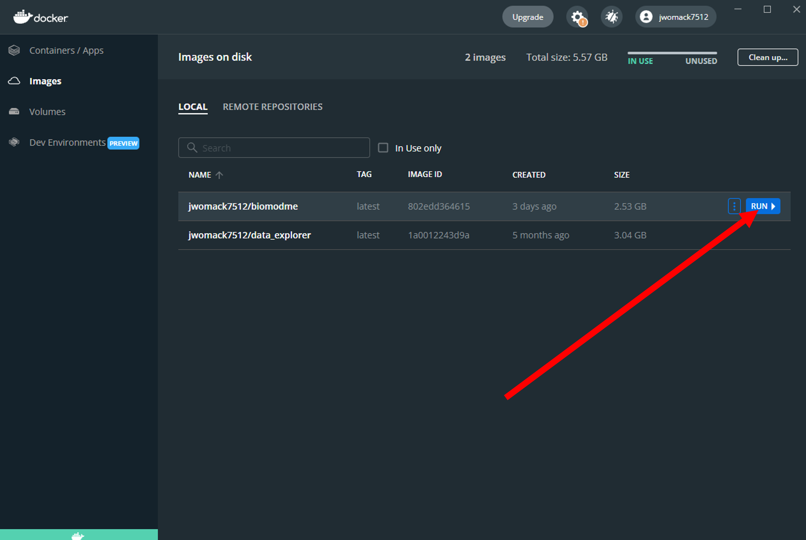
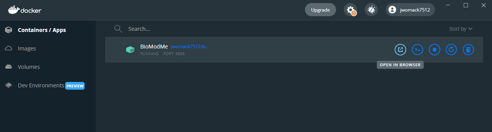

Pull Docker Image
The application has been created as a docker image for user convenience if they wish to run the app locally without installing R or worrying about other possible dependencies.
Download Docker
In this section, we will download docker to our computer. This will install the desktop app but what we really need is the docker terminal commands to be added. If you have a working version of Docker on your system, skip to the next section.
Download docker for your respective system. This tutorial follows the windows download.

Go to you downloads folder and begin the system installation of docker. This download will take a few minutes.
A configuration popup will appear. Keep “Install required Windows components for WSL 2” checked. You can uncheck the desktop shortcut option if you want.

Once download is complete a message will appear to restart your system. Perform computer restart.
On restart you may get a notification that “WSL 2 installation is incomplete”. If this is the case you will need to install this update or the docker image will not run. Follow the link on the popup, it takes you to the following link: https://docs.microsoft.com/en-us/windows/wsl/install-manual#step-4– -download-the-linux-kernel-update-package}{https://docs.microsoft.com/en-us /windows/wsl/install-manual#step-4—download-the-linux-kernel-update- package. Download and install the kernel from this link.

Restart computer again and open docker program. It should be fully installed and working now. A working program has a green color in the bottom left corner and lacks a huge error message in the center of the application.

Note: A Docker account does not need to be made in order to pull and run this program.
Pull/Run From Docker
With docker installed, we can now use the command line to pull the program we desire, meaning we can download it to our computer from the docker cloud.
Open the computer’s terminal (command prompt).
Type the below command to pull the application from the docker cloud (this takes approximately five minutes):
docker pull jwomack7512/biomodme
Type the following command to run the application:
docker run -dp 3838:3838 jwomack7512/biomodme
This step might need approval from windows defender or other antivirus program.

The above command runs the program at a local host port. To access the app, open your web browser and type the following:
localhost:3838
The application should now load on the opened webpage.
Loading Application After Pull
After the image has been pulled once, there is not a need to repull it. The image should be saved to your local docker program and can be loaded easily using the Docker Hub GUI.
Open docker and navigate to the “images” tab. Here you should see a copy of the image you pulled in the previous step. This means its available without having to repull it.
Scroll over the image jwomack7512/biomodme. A “run” button will appear. Press that button.

A popup will appear. Click the dropdown arrow to show optional settings. Here we give the container the name “bioModMe”. If you do not give it a name, docker will randomly generate one. Type in “3838” in Local Host. This is necessary or the program will not load to the proper port the Rshiny app specifies. Press the “Run” button.

Go to the “Containers/Apps” tab in Docker Hub. You should see the container you created with a note saying it is running at port 3838. You can access the app by simply clicking the “Open in Browser” button. Note: you may already have a container built from using the command line, meaning you could just run that one instead of rebuilding it in the previous steps.

In the above figure, if you double click the container the logs will open for the application. These can be useful for debugging and submitting errors.